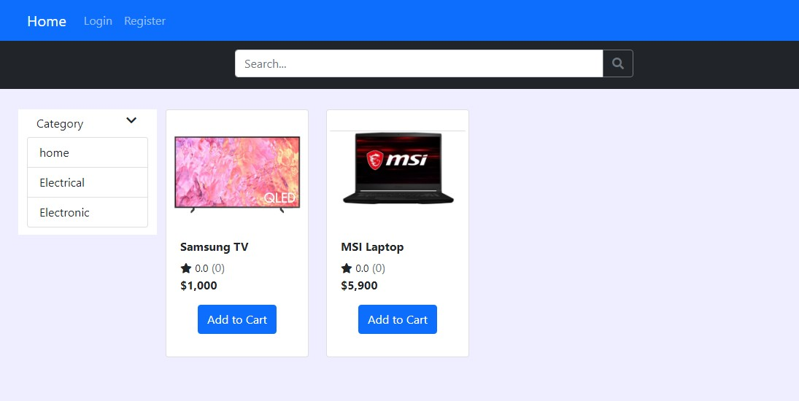

This project was an e-commerce built website using Python and the Django framework for the back-end with MySQL for database management, HTML, CSS and Bootstrap for the front end. Includes functionality for user management, product management, cart management, order management and Payments integration using PayPal REST APIs.
The aim of this project was to design and develop a python-based voting web application using g HTML, CSS, JavaScript and Bootstrap for the front-end, and Python and Django for the backend with SQLite for database management. The app includes fucntions for user management and result calculation using JavaScript. Furthermore, application tests where also included. A dockerfile is also available to enable compaitbility with any machine with docker installed. When a user registers or the first time, they are given either one of two options. Upon selection they are then taken to the resutls sectioin showing the poll statisitcs of the two options. After voting the user can only access the results section to prevent the user from changing or voting more than once.
The purpose of this project is to create a Java-based 2D typing game using multithreading, that displays random words to be typed before reaching the bottom. The random words data is generated from an input dictionary file. The prgram uses a makefile to run that is desinged for Linux systems.
The aim of this project was to design and implement a Python-based IoT API for a surveillance system with using a raspberry pi 3B+ for residential, commercial or industrial sites. The system includes a motion detector that captures images when motion is detected. These images are then sent to the administrtor's email for further investigation. In addition to image capture, videos can also be taken by the system upon the user's request. These can either be manually taken or automatically triggered by light intensity through a light sensor. All these functions are controlled remoteley by the amdinistrator through a web server.
The aim of this project was to implement a Python-based IoT environment logger for a greenhouse using a raspberry pi 3B+. The system collects various measurement data using analogue sensors at regular intervals. The data being collected for measurement were light, temperature and humidity. the sensors used to collect these measurements interaacted with the raspberry pi through an ADC to convert the analogue sensor readings to values. In order to view these measurements remotely, Blynk(an IoT platform) was used to allow these mesurements to be monitored in real-time on an Android smartphone. An RTC was used to determine the intervals at which measuremnets were taken and sent to the Blynk server.